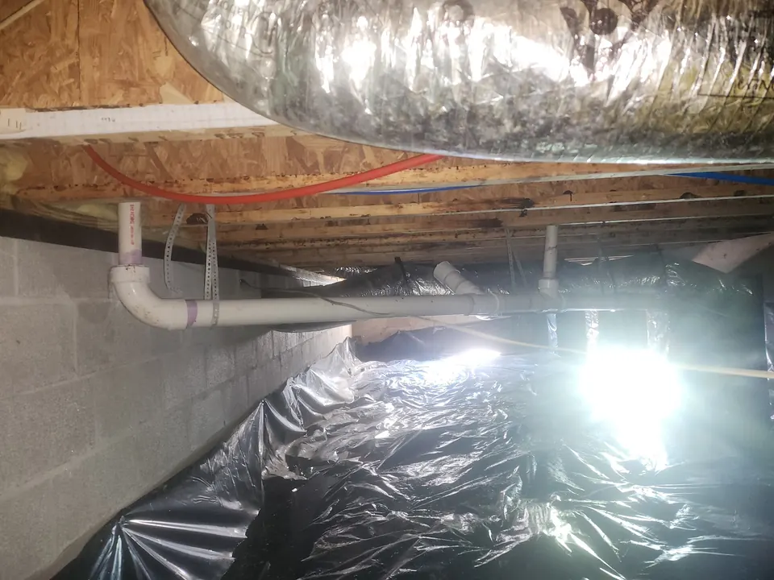

Whether you are dealing with a minor sewer line issue or a more serious pipe failure, our team delivers dependable service, accurate diagnosis, and quality workmanship to restore your plumbing system and help prevent further damage.
Schedule Sewer Pipe Repair Today!
Professional Sewer Pipe Repair Services
Your sewer line plays a critical role in carrying wastewater safely away from your home or building. When that line becomes damaged, it can disrupt your entire plumbing system. At Angle Stop Plumbing, we provide thorough sewer pipe repair services to identify the source of the problem and recommend the right repair solution.

Our sewer repair services may include:
- Sewer pipe leak repair
- Cracked sewer pipe repair
- Broken sewer line repair
- Collapsed sewer pipe repair
- Root-damaged sewer pipe repair
- Underground sewer pipe repair
- Drain and sewer line troubleshooting
- Partial sewer line replacement
- Residential sewer pipe repair
- Commercial sewer pipe repair
We work efficiently to restore proper wastewater flow and reduce the risk of ongoing backups or structural damage.
Signs You May Need Sewer Pipe Repair
Sewer pipe issues often start with warning signs that should not be ignored. You may need professional sewer pipe repair services if you notice:
- Frequent drain backups or clogs
- Multiple drains draining slowly at the same time
- Sewage odors inside or outside the property
- Gurgling sounds coming from toilets or drains
- Wet spots or unusually green patches in the yard
- Cracks in pavement or shifting soil near the sewer line
- Sewage backup in tubs, showers, or floor drains
- Ongoing plumbing issues that keep returning after drain cleaning
These symptoms may point to a damaged or blocked sewer line that needs prompt attention.
Common Causes of Sewer Pipe Damage
Sewer pipes can fail for several reasons. At Angle Stop Plumbing, we commonly repair sewer line issues caused by:
- Tree root intrusion
- Pipe corrosion or age-related deterioration
- Ground shifting or foundation movement
- Cracks, fractures, or joint separation
- Grease buildup and debris blockages
- Heavy traffic or soil pressure above underground lines
- Poor installation or outdated pipe materials
No matter the cause, we focus on identifying the issue accurately so the repair addresses the real problem, not just the symptoms.
Our Sewer Pipe Repair Process
We take a practical, professional approach to sewer line repair.
- Inspect the sewer line to determine the location and nature of the damage.
- Diagnose the cause of the issue, such as root intrusion, cracking, collapse, or blockage.
- Recommend the right repair option based on the condition of the pipe and the severity of the problem.
- Complete the repair using proven plumbing methods and quality materials.
- Test the system to confirm proper drainage and reliable function.
Our goal is to restore the sewer line as efficiently as possible while helping you understand the condition of your system and any recommended next steps.
Sewer Pipe Problems We Repair
At Angle Stop Plumbing, we handle a wide range of sewer line issues. If your sewer pipe is leaking, cracked, sagging, offset, root-invaded, or partially collapsed, we can provide the repair services needed to restore proper function.
Sewer problems are not just inconvenient. They can create sanitation risks, damage landscaping, affect foundations, and lead to more extensive plumbing repairs if left untreated. Fast, professional service helps limit the damage and protect your property.
Repair or Replace? Honest Recommendations Matter
Not every sewer line problem requires full replacement. In some cases, a localized repair may solve the issue effectively. In other situations, replacement may be the better long-term investment if the pipe is badly deteriorated, repeatedly failing, or damaged in multiple sections.
At Angle Stop Plumbing, we provide honest recommendations based on the condition of your sewer line, the extent of the damage, and the most cost-effective solution for lasting performance. We believe homeowners should have clear information before making a decision.
Why Choose Angle Stop Plumbing for Sewer Pipe Repair?
When you need a trusted plumber for sewer pipe repair, experience and responsiveness matter. Customers choose Angle Stop Plumbing because we provide:
- Prompt response for sewer line issues
- Careful diagnosis and dependable repair solutions
- Honest recommendations with clear communication
- Quality workmanship and professional service
- Plumbing solutions focused on long-term reliability
- Service for residential and commercial sewer systems
We understand how stressful sewer problems can be, and we work hard to deliver efficient, effective repairs with as little disruption as possible.
Schedule Sewer Pipe Repair With Angle Stop Plumbing
If you are dealing with recurring drain backups, sewer odors, or a damaged sewer line, contact Angle Stop Plumbing for professional sewer pipe repair services. Our team is ready to identify the problem, restore proper sewer flow, and help protect your property from further damage.
Trust Angle Stop Plumbing for responsive service, reliable repairs, and expert care for your sewer plumbing system.